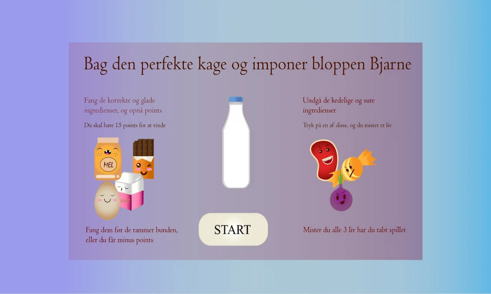

Grundlæggende animation
I dette tema var formålet at designe og producere et spil. Spillets koncept og ide skulle være originalt, men med mulig inspiration fra andre designere. Derudover skulle vi kode hele spillet fra bunden, denne gang også ved brug af Javascript, som var et nyt kodesprog for os. Alt i alt skulle forløbet gennemføres ved brug af Adobe Illustrator, HTML, CSS og Javascript. Spillets koncept er, at man skal hjælpe bloppen Bjarne med at bage den perfekte kage. En masse forskellige ingredienser falder ned fra oven, og for at vinde spillet skal du trykke på de korrekte. Tryk på enten melet, sukkeret, chokoladen eller ægget som giver +1 points. Skulle en af de gode ingredienser ramme bunden mister du 1 points. De dårlige ingredienser bøffen, slikket og løget mister du et liv på. Du skal opnå 15 points for at vinde spillet.

Spillets elementer
Inspirationen til designet kommer fra Lisa Vertudaches. Specifikt med fokus på baby bias. Dette kan specielt ses igennem de runde former og kanter på alle elementerne, samt øjnene. Lisa Vertudaches har designet en række forskellige figurer, der alle fremstilles forskelligt. Kigger vi nærmere på øjnene kan vi typisk se store runde øjne. Nogle gange hvide med små sorte pupiler, andre med store sorte runde øjne med hvide pupiler. Udsendmæssigt er de foskellige, men de udtrykker begge cuteness, hvilket også er brugt i spillet. Derudover er der til figuren, Bjarne, taget inspiration fra nogle af Lisa Vertudaches andre figurer. Ved selve spil elementerne, kan man ved første kast danne en fornemmelse af Kawaii. For at adskille sig fra dette forsøgte jeg at ligge fokus på øjnene og munden, og derved sørge for at de blev adskilt fra det typiske Kawaii design, og nærmere Vertudaches.
Skitse
Da vi begyndte processen til at finde et spil vi ville designe, blev jeg straks draget til "Den store bagedyst". Jeg ville lave noget sødt design, med et formål der kan udvikles til alle aldre. Da vi ikke måtte kopiere 1 til 1, kunne det til tider være udfordrene at holde sig fra at falde over i noget af det kendte, men til sidst lykkedes det. Dette demonstreres dog også ifølge skitserne, hvor den oprindelige plan var at have en dommer stående i spilleskærmen. Dette blev dog erstattet med en figur, inspireret af Lisa Vertudache. Sidst, for at beholde stemningen fra "Den store bagedyst", valgte jeg dog at ligge en stemme til spillet med replikker fra den kendte bage serie. Skulle spilleren få trykket på en af de rigtige elementer, vil der komme en kommentar der siger "flot snit". Dette og lignende kommentarer blev implementeret.
Spillets design
Selve spillets design, såsom for- og baggrund, blev holdt ganske simpelt. Dette skyldtes dels fordi der blev brugt mest tid på elemeneterne og startskærmen, men yderligere for at putte for mange ikke spilbare ting, ind midt i det hele. Spillets formål er ganske simpelt, i det elementerne vil flyve ned fra oven og ned bag bordet. Det er inden de rammer her, at spilleren skal nå at fange de korrekte ingredienser. Længere nede på siden kan de yderligere ses hvordan spillet vinder og start skærm er designet. Dette igen er holdt til den simple version for at undgå forvirring for spilleren.
Instrukser
Spilleskærm